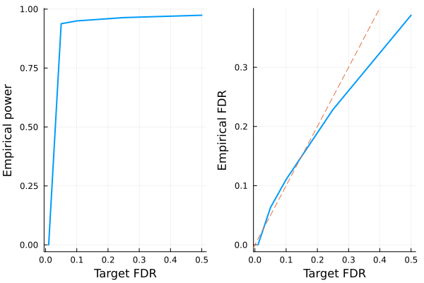

Fixed-X knockoffs
This tutorial generates fixed-X knockoffs and checks some of its basic properties. The methodology is described in the following paper
Barber, Rina Foygel, and Emmanuel J. Candès. "Controlling the false discovery rate via knockoffs." The Annals of Statistics 43.5 (2015): 2055-2085.
For fixed-X knockoffs, we assume $n > 2p$ where $n$ is sample size and $p$ is number of covariates, although in principle this method can be adapted to work for $n > p$ case.
# load packages needed for this tutorial
using Knockoffs
using Random
using GLMNet
using LinearAlgebra
using Distributions
using Plots
gr(fmt=:png);Generate knockoffs
We will
- Simulate Gaussian design matrix
- Generate knockoffs. Here we generate maximum entropy (ME) knockoffs as described in this paper. ME knockoffs tend to have higher power over SDP or equi-correlated knockoffs. For more options, see the fixed_knockoffs API.
X = randn(1000, 200) # simulate Gaussian matrix
normalize_col!(X) # normalize columns of X
# make ME knockoffs
@time me = fixed_knockoffs(X, :maxent); 0.767067 seconds (102 allocations: 22.303 MiB)The return type is a Knockoff struct, which contains the following fields
struct GaussianKnockoff{T<:AbstractFloat, M<:AbstractMatrix, S <: Symmetric} <: Knockoff
X::M # n × p design matrix
Xko::Matrix{T} # n × mp knockoff of X
s::Vector{T} # p × 1 vector. Diagonal(s) and 2Sigma - Diagonal(s) are both psd
Sigma::S # p × p symmetric covariance matrix.
method::Symbol # method for solving s
m::Int # number of knockoffs per feature generated
endThus, to access these fields, one can do
Xko = me.Xko
s = me.s
Sigma = me.Sigma; # estimated covariance matrixWe can check some knockoff properties. For instance, is it true that $X'\tilde{X} \approx \Sigma - diag(s)$?
# compare X'Xko and Sigma-diag(s) visually
[vec(X'*Xko) vec(Sigma - Diagonal(s))]40000×2 Matrix{Float64}:
0.376926 0.376926
-0.0434507 -0.0434507
-0.00211772 -0.00211772
-0.00720163 -0.00720163
-0.0160462 -0.0160462
0.00304937 0.00304937
-0.0207398 -0.0207398
-0.0171064 -0.0171064
0.0164143 0.0164143
-0.0314399 -0.0314399
-0.01243 -0.01243
0.0308754 0.0308754
0.0194948 0.0194948
⋮
-0.0183637 -0.0183637
0.0180358 0.0180358
-0.0269833 -0.0269833
0.00231273 0.00231273
0.0047828 0.0047828
0.0191073 0.0191073
0.0116001 0.0116001
-0.0203994 -0.0203994
0.00449654 0.00449654
-0.00696245 -0.00696245
-0.0045149 -0.0045149
0.363215 0.363215LASSO example
Let us apply the generated knockoffs to the model selection problem
Given response $\mathbf{y}_{n \times 1}$, design matrix $\mathbf{X}_{n \times p}$, we want to select a subset $S \subset \{1,...,p\}$ of variables that are truly causal for $\mathbf{y}$.
Simulate data
We will simulate
\[\mathbf{y}_{n \times 1} \sim N(\mathbf{X}_{n \times p}\mathbf{\beta}_{p \times 1} \ , \ \mathbf{\epsilon}_{n \times 1}), \quad \epsilon_i \sim N(0, 0.5)\]
where $k=50$ positions of $\mathbf{\beta}$ is non-zero with effect size $\beta_j \sim N(0, 1)$. The goal is to recover those 50 positions using LASSO.
# set seed for reproducibility
Random.seed!(2022)
# simulate true beta
n, p = size(X)
k = 50
βtrue = zeros(p)
βtrue[1:k] .= randn(50)
shuffle!(βtrue)
# find true causal variables
correct_position = findall(!iszero, βtrue)
# simulate y using normalized X
y = X * βtrue + randn(n)1000-element Vector{Float64}:
11.443750905602776
0.9838821881590077
4.005284705393306
-3.7700161069515
-13.00069065413081
-3.723567487544001
-0.023706041074809142
-7.7754509432906405
-1.3428086906548775
2.997872505761214
3.0159247260525435
7.447226561613222
0.8552180712448658
⋮
7.5361496693874495
4.931186951450571
-2.257175596026274
-0.5319905325018484
8.025043090281391
6.3728542780832385
-3.0432136216197696
0.77378700225668
-3.454973406104122
-5.29163844545535
2.74314096421341
0.05144992498465495Standard LASSO
Lets try running standard LASSO, which will produce $\hat{\mathbf{\beta}}_{p \times 1}$ where we typically declare variable $j$ to be selected if $\hat{\beta}_j \ne 0$. We use LASSO solver in GLMNet.jl package, which is just a Julia wrapper for the GLMnet Fortran code.
How well does LASSO perform in terms of power and FDR?
# run 10-fold cross validation to find best λ minimizing MSE
lasso_cv = glmnetcv(X, y)
λbest = lasso_cv.lambda[argmin(lasso_cv.meanloss)]
# use λbest to fit LASSO on full data
βlasso = glmnet(X, y, lambda=[λbest]).betas[:, 1]
# check power and false discovery rate
power = length(findall(!iszero, βlasso) ∩ correct_position) / k
FDR = length(setdiff(findall(!iszero, βlasso), correct_position)) / count(!iszero, βlasso)
println("Lasso power = $power, FDR = $FDR")Lasso power = 0.96, FDR = 0.5About half of all discoveries from Lasso regression are false positives.
Knockoff+LASSO
Now lets try applying the knockoff methodology. Recall that consists of a few steps
- Run LASSO on $[\mathbf{X} \mathbf{\tilde{X}}]$
- Compare feature importance score $W_j = \text{score}(x_j) - \text{score}(\tilde{x}_j)$ for each $j = 1,...,p$. Here we use $W_j = |\beta_j| - |\tilde{\beta}_{j}|$
- Choose target FDR $q \in [0, 1]$ and compute
\[\tau = min_{t}\left\{t > 0: \frac{{\{\#j: W_j ≤ -t}\}}{max(1, {\{\#j: W_j ≥ t}\})} \le q\right\}\]
@time knockoff_filter = fit_lasso(y, me); 1.049388 seconds (835 allocations: 46.274 MiB)The return type is now a LassoKnockoffFilter, which contains the following information
struct LassoKnockoffFilter{T} <: KnockoffFilter
y :: Vector{T} # n × 1 response vector
X :: Matrix{T} # n × p matrix of original features
ko :: Knockoff # A knockoff struct
m :: Int # number of knockoffs per feature generated
betas :: Vector{Vector{T}} # betas[i] is the p × 1 vector of effect sizes corresponding to fdr level fdr_target[i]
a0 :: Vector{T} # intercepts for each model in betas
selected :: Vector{Vector{Int}} # selected[i] includes all variables selected based on target FDR level fdr_target[i]
W :: Vector{T} # length p vector of feature importance
taus :: Vector{T} # threshold for significance. For fdr fdr_target[i], tau[i] is threshold, and all W ≥ tau[i] is selected
fdr_target :: Vector{T} # target FDR level for each taus and betas
d :: UnivariateDistribution # distribution of y
debias :: Union{Nothing, Symbol} # how betas and a0 have been debiased (`nothing` for not debiased)
endGiven these information, we can e.g. visualize power and FDR trade-off:
# run 10 simulations and compute empirical power/FDR
nsims = 10
empirical_power = zeros(5)
empirical_fdr = zeros(5)
for i in 1:nsims
# simulate data
X = randn(1000, 200)
k = 50
βtrue = zeros(p)
βtrue[1:k] .= randn(50)
shuffle!(βtrue)
correct_position = findall(!iszero, βtrue)
y = X * βtrue + randn(n)
# generate knockoff and fit lasso
@time me = fixed_knockoffs(X, :maxent)
@time knockoff_filter = fit_lasso(y, me)
# compute FDR/power
FDR = knockoff_filter.fdr_target
for i in eachindex(FDR)
selected = knockoff_filter.selected[i]
power = length(selected ∩ correct_position) / k
fdp = length(setdiff(selected, correct_position)) / max(length(selected), 1)
empirical_power[i] += power
empirical_fdr[i] += fdp
end
end
empirical_power ./= nsims
empirical_fdr ./= nsims
# visualize FDR and power
power_plot = plot(FDR, empirical_power, xlabel="Target FDR", ylabel="Empirical power", legend=false, w=2)
fdr_plot = plot(FDR, empirical_fdr, xlabel="Target FDR", ylabel="Empirical FDR", legend=false, w=2)
Plots.abline!(fdr_plot, 1, 0, line=:dash)
plot(power_plot, fdr_plot) 0.730351 seconds (102 allocations: 22.303 MiB, 0.75% gc time)
0.882967 seconds (835 allocations: 46.349 MiB)
0.508460 seconds (102 allocations: 22.303 MiB)
0.888551 seconds (835 allocations: 46.278 MiB)
0.643473 seconds (102 allocations: 22.303 MiB)
0.891910 seconds (835 allocations: 46.492 MiB, 0.18% gc time)
0.432557 seconds (102 allocations: 22.303 MiB)
0.859462 seconds (835 allocations: 46.205 MiB)
0.474027 seconds (102 allocations: 22.303 MiB)
0.879261 seconds (835 allocations: 46.277 MiB)
0.586823 seconds (102 allocations: 22.303 MiB, 0.48% gc time)
0.883496 seconds (835 allocations: 46.421 MiB)
0.742627 seconds (102 allocations: 22.303 MiB)
0.878495 seconds (835 allocations: 46.127 MiB)
0.576416 seconds (102 allocations: 22.303 MiB)
0.884102 seconds (835 allocations: 46.204 MiB, 0.15% gc time)
0.617052 seconds (102 allocations: 22.303 MiB)
0.885246 seconds (835 allocations: 46.493 MiB)
0.536176 seconds (102 allocations: 22.303 MiB)
0.872704 seconds (835 allocations: 46.127 MiB, 0.15% gc time)
Conclusion:
- Regular Lasso has good power but nearly 50% of all discoveries are false positives.
- Knockoffs + Lasso controls the false discovery rate at below the target (dashed line)